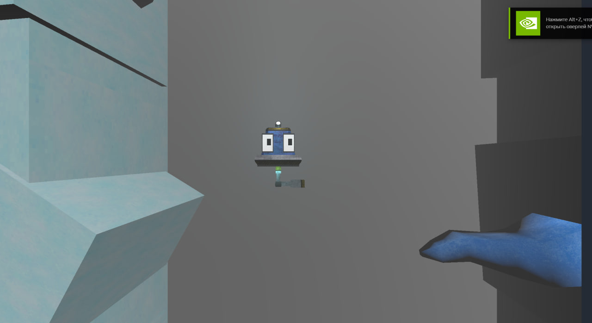
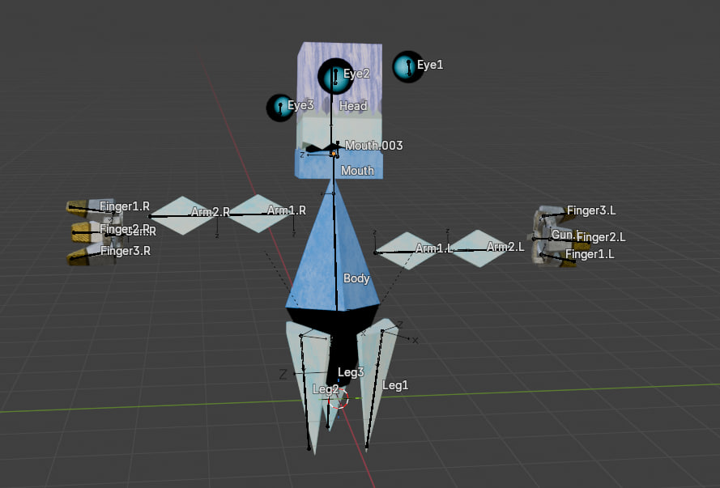
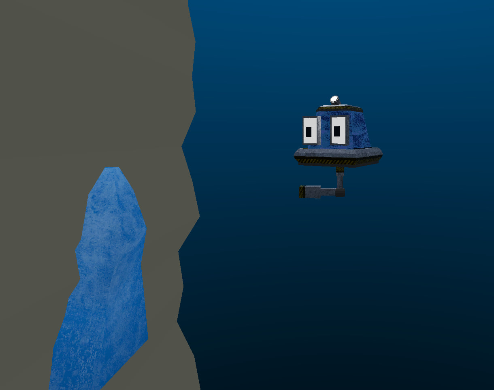

FALL MACHINE
FALL MACHINE - This is another project I'm working on right now.
After DC, Taylor and I tried different game ideas. We needed something simpler. Eventually, I started developing FM.

The idea was straightforward. The gameplay was that the player endlessly fell into an endless hole. In the hole, you'd encounter various enemies and obstacles that you need to dodge.
I had this idea even before developing DC. But in Scratch, I was just too lazy to do it.
I combined development with my studies. Basically, I switched to Godot. This is already a serious and proper game engine.
Very quickly, this idea kept growing and expanding. So here's what the idea is today:
Story and Gameplay
So. You're a scientist. You work in Antarctica. In this universe, they found deposits of some unique minerals/stones at the South Pole. One of the loaders transporting this philosophical cargo dropped one of the minerals into some crack in the ground. When trying to get the mineral out by hand or with other tools, it only went deeper. Eventually, it turned out that the crack was an entrance to some cave. Meanwhile, someone already managed to steal the mineral. Scanning showed that: first, the cave is crazy deep, second, the mineral is at the very bottom. The mineral is still very valuable, so they send you down to the bottom in a special transport for protection and cushioning the fall, thanks to the force generated by the engine. But here's the problem - the engine just broke, and the transport along with you falls like a stone down. Communication with the outside world is cut off.
In the depths, there's something unusual, some other world... Terribly strange, but familiar. There are traces of human activity in the world.

After passing this first level, you're met by some robot (haven't figured out what to call him yet). He was ready to kill you, but then he learns about your goal - to get that damn mineral. The robot has a different goal though. He was created to watch over this world. He tells you about its structure:
The whole world is divided into layers (or levels). Each level is jerked off by managed by its own boss. Unfortunately (or fortunately), all of them are infected.
It's simple - you need to go through each boss and eliminate them all, thus getting to the very bottom. That's where the player will find the mineral and get sent back to the base.
I'll say right away that I obviously didn't retell the entire plot.

I planned 5 levels in total. Right now, the first 2 levels are being made.
Wait for new updates about the game!